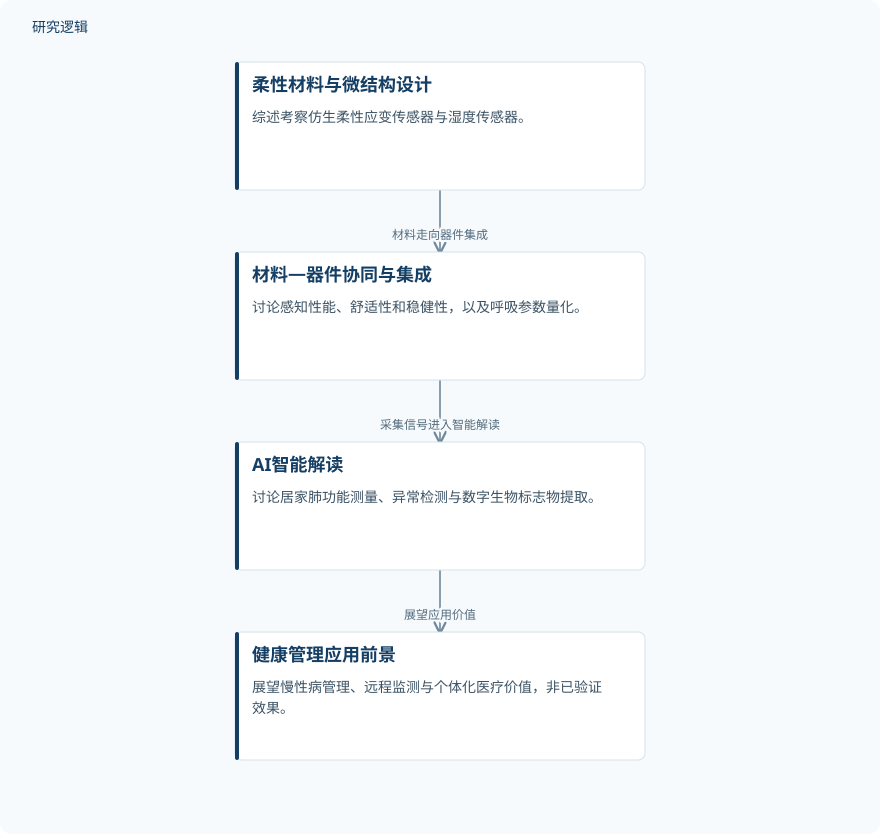

摘要解读
柔性传感器与人工智能融合的下一代呼吸健康监测
AI-driven next-gen health monitoring via flexible sensors to decode breath
解读更新 2026-11-10 11:57 · 依据公开摘要整理，未核验全文细节
呼吸动态蕴含心肺、代谢与神经功能信息，但如何持续、准确地捕捉这些信号，仍受传感界面与动态生物组织不匹配的制约。这篇综述将柔性传感材料与人工智能解码联系起来，为理解智能呼吸监测的技术链条提供线索。
文章目录
呼吸监测的难点，从传感界面开始
呼吸监测不仅关乎记录呼吸节律，也涉及从动态信号中理解身体功能。摘要将核心困难指向传感界面：当生物组织持续运动时，界面与组织的不匹配会妨碍连续、准确的信号采集。因此，研究关注的不只是后端算法，也包括前端材料与器件如何适应身体动态。
综述如何串联柔性材料与AI解码
本文是一篇综述，而非摘要中报告单套装置实验的研究。作者系统考察具有微结构设计的仿生柔性应变传感器与湿度传感器，讨论其呼吸参数量化能力，以及材料—器件协同设计对感知性能、舒适性和稳健性的作用。
在信号分析端，综述讨论AI如何承担呼吸信号解码任务，并将材料、集成与智能解读组织为一条技术链。摘要没有给出文献检索、筛选或证据评价方法，因此不能据此将其认定为采用特定流程的系统综述。
依据摘要整理的呼吸监测技术链


概括综述明确提出的材料、集成与智能解读关系，不代表论文原图或单项实验流程。
下载 SVG图示关系说明
实线表示相邻阶段的信息流，虚线表示跨阶段联系或反馈。
柔性材料与微结构设计 → 材料—器件协同与集成：材料走向器件集成；材料—器件协同与集成 → AI智能解读：采集信号进入智能解读；AI智能解读 → 健康管理应用前景：展望应用价值
核心归纳：传感性能与智能解读需要共同推进
摘要强调，材料—器件协同设计是提升传感性能、舒适性和稳健性的关键，并以“医疗级精度”描述所讨论传感技术的呼吸参数量化能力。但这一表述没有附带具体指标，不能直接当作所有相关器件均达到同一临床标准的证据。
AI的作用被概括为支持居家肺功能测量、异常检测，以及面向疾病筛查的跨学科数字生物标志物提取。综述据此构建从材料到集成、再到智能解读的技术范式；对慢性病管理、远程监测和个体化医疗的价值，则应理解为作者讨论的应用前景，而非本文已完成的效果验证。
摘要尚不能回答验证范围与比较强度
仅凭摘要，无法判断所综述研究的样本规模、人群构成、疾病覆盖、监测时长及使用环境，也无法核对传感器或AI模型与哪些参照方法比较。精度的定义、外部验证范围及临床转化挑战的具体内容同样需要进一步阅读；这些是当前资料的边界，不代表论文未作相关讨论。
阅读启发：沿信号链辨别能力与前景
阅读启发：后续可沿“界面适配—信号采集—智能解读”追问，各环节的性能主张由什么证据支撑，舒适性、稳健性与量化精度又如何共同评价。尤其值得区分“测到呼吸变化”“识别异常”与“支持疾病筛查”的证据要求，避免把技术潜力等同于临床有效性。
以上为本站阅读启发与建议，不是论文已验证的结论。